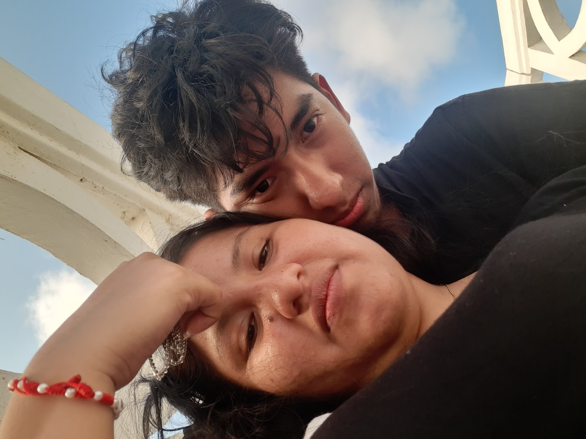
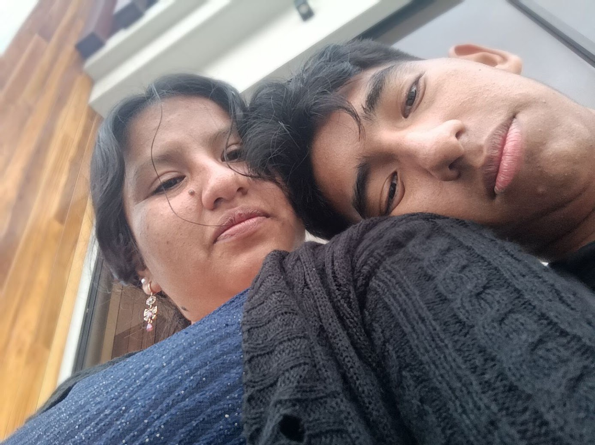
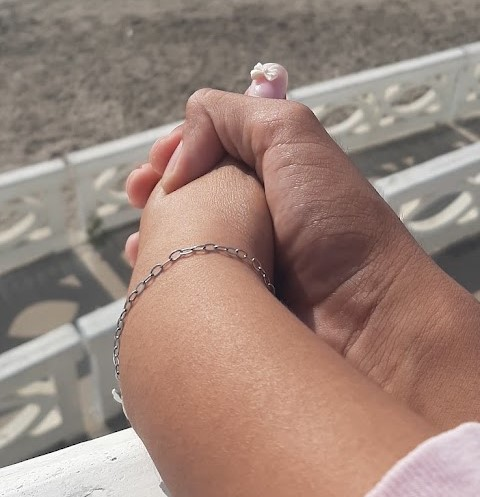
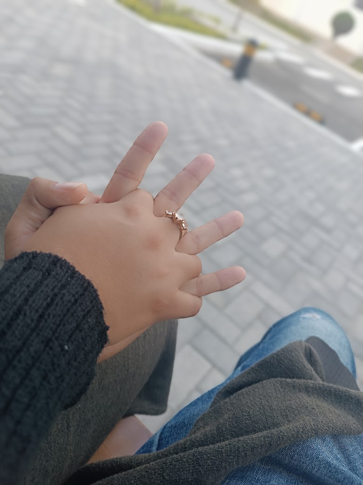
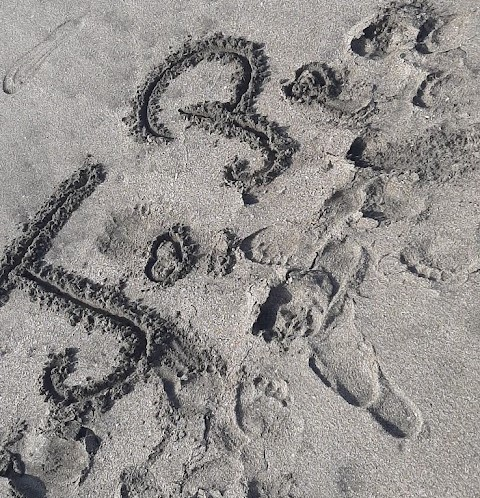

Hoy no es una fecha especial. Es un día normal, y quería que supieras cuánto te quiero, mi chiquita.
Toca para comenzar
Antes de ti yo creía que sabía lo que era ser feliz.
Pero era una felicidad pequeña, tranquila, sin color.
Y entonces apareciste tú.
Ese día, sin saberlo, mi vida cambió para siempre.

Una playa, tú a mi lado y una foto que todavía no sabía que sería el comienzo de todo.
Recuerdo el ruido del mar, el viento y los nervios.
Y recuerdo mirarte y pensar que ojalá ese momento no se acabara nunca.
Todavía pienso lo mismo cada vez que te veo.
Mes tras mes, entre risas, abrazos y mensajes a cualquier hora, sigo eligiéndote. Sin fecha especial, sin motivo, solo porque quiero.



Cada una de estas fotos guarda un pedacito de lo que somos.
Admiro todo de ti, chiquita. Eres linda por dentro y por fuera, y no hay una sola cosa que cambiaría.
Lo que más amo no son los grandes momentos.
Es tu voz cuando me hablas bajito, tu risa cuando algo te da vergüenza, la forma en que me buscas con la mirada.
Son esas cosas chiquitas las que me enamoran todos los días.
Contigo hasta los días difíciles se sienten más livianos.
Tú eres mi calma, mi lugar seguro, la persona a la que quiero contarle todo.
Gracias por ser mi casa.
Aprendí que el amor es paciencia y que se demuestra con detalles.
Aprendí que quedarse a escuchar vale más que mil regalos.
Y aprendí que a tu lado quiero ser mejor persona.

Y todavía nos faltan mil fotos por tomarnos.
Prometo cuidarte cuando estés cansada.
Prometo escucharte aunque ya me hayas contado la historia.
Prometo hacerte reír aunque sea con mis chistes malos.
Y prometo elegirte cada vez que tenga que elegir.
Mi chiquita: hoy no es un día especial. No hay aniversario ni cumpleaños. Y justo por eso quería escribirte.
Quería que supieras que no necesito una fecha para amarte. Te amo en un día cualquiera, con sueño, con prisa, con hambre, y también cuando no estás cerca.
Gracias por cada abrazo, por cada llamada, por cada vez que me elegiste aunque yo no me lo mereciera.
Si algún día dudas de lo que vales, acuérdate de que hay alguien que te ama con todo lo que tiene.
Con todo mi corazón, José
Si me preguntan cuál es lo mejor de mis días, no tengo que pensarlo.
Fuiste tú. Siempre tú.
Solo porque sí, y porque eres tú.
Hoy, mañana y todos los días.